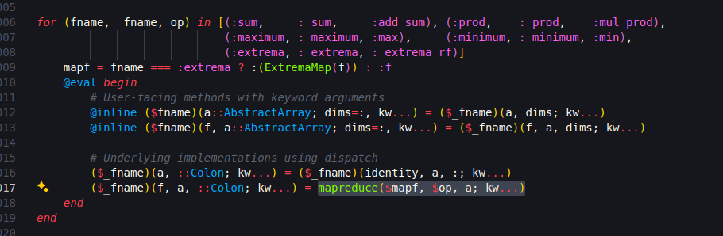

using RCall;
R"""
median(1:5)
"""RObject{IntSxp}
[1] 3I know a lot of R and can do my daily job with it. Why should I learn Julia?
In my case, I was looking for some adventure. Haskell seemed too hard, Python too normal. So I went on a journey to learn Julia and was very happy with what I discovered.
I love R, it is my breadwinner (and has been for the past 6 years), and because of that I know some of its limitations. So below is a (biased) list of features that may interest you in trying Julia:
Not sure where to begin in Julia? Start with R!
With RCall you can run R code inside Julia:
using RCall;
R"""
median(1:5)
"""RObject{IntSxp}
[1] 3You can even pass objects from Julia to R and vice-versa:
x = [1:5;]
@rput x
R"median(x)"RObject{IntSxp}
[1] 3This R chunks in this Quarto notebook were made using RCall! See RCall docs for more details.
You can see some differences between R and Julia here.
Tidier.jl is a data analysis package inspired by R’s tidyverse and crafted specifically for Julia. It is made with the macro magic described below. Behind the scenes, it is transformed in usual Dataframes.jl code.
Here’s an example from TidierData docs:
using TidierData
using RDatasets
movies = dataset("ggplot2", "movies");
@chain movies begin
@mutate(Budget = Budget / 1_000_000)
@filter(Budget >= mean(skipmissing(Budget)))
@select(Title, Budget)
@slice(1:5)
endIt looks like dplyr code with @s.
In R, whenever you need some really fast code (as fast as you would get in C), you have to use C or Fortran code. R is simply slow. If you need speed in R, you will have to find a package that already implements what you need or learn C/Fortran, use RCpp and pray.
stringi package sourcecode.In Julia, you won’t need other language to get speed close to C. That’s way they say that Julia solves the two language problem. Julia packages are almost always 100% Julia, which means that you can look to its sourcecode and learn a lot.

This is specially interesting if you read Julia Base sourcecode! How does Julia define the maximum of a vector? Type
@edit maximum([1:5;])and you will see this:

It takes some time to grasp the meaning, but in the end it says “apply a mapreduce into the vector, using the max function on each pair of numbers”. In R, the sourcecode is a sad .Primitive("max").
In Julia, to obtain maximum performance, you need to follow just two principles, as quoted from the excellent Modern Julia Workflows:
For me, it sounds easier than learn C++.
Tired of writing loops? Julia has a special notation . (yes, a dot) to apply any function to a vector/array/iterable-object; this is called broadcasting. For example, you can apply the power2 function in a vector as easy as
#julia
# define power2 for numbers
power2(x) = x^2;
# apply in vectors
power2.(1:10)10-element Vector{Int64}:
1
4
9
16
25
36
49
64
81
100or in a matrix
#julia
X = reshape([1:16;], (4, 4))4×4 Matrix{Int64}:
1 5 9 13
2 6 10 14
3 7 11 15
4 8 12 16#julia
power2.(X)4×4 Matrix{Int64}:
1 25 81 169
4 36 100 196
9 49 121 225
16 64 144 256When using infix functions like + or =, you put the dot before the operator, as in
#julia
[1:5;] .+ 105-element Vector{Int64}:
11
12
13
14
15In R, you always try to avoid loops because they are slow. Suppose you have a vector and want to sum 1 to every entry. As an experienced R programmer, you look for a vectorized approach:
# R
f1_vec = function(x) {
y = x + 1
}instead of a loop
# R
f1_loop = function(x) {
y = x
for (i in seq_along(x)) y[i] = x[i] + 1
y
}or a even a purrr::map approach (if you are in a functional programming mood)
#R
f1_map = function(x) {
purrr::map_dbl(x, \(xi) xi + 1)
}because the first options is faster. We can see the difference:
# R
x = 1:100000
bench::mark(
f1_vec(x)
,f1_loop(x)
,f1_map(x)
,relative = TRUE
)RObject{VecSxp}
# A tibble: 3 × 13
expression min median `itr/sec` mem_alloc `gc/sec` n_itr n_gc total_time
<bch:expr> <dbl> <dbl> <dbl> <dbl> <dbl> <int> <dbl> <bch:tm>
1 f1_vec(x) 1 1 122. 1 11.0 782 11 500ms
2 f1_loop(x) 44.8 13.2 11.3 1.03 1 73 1 502ms
3 f1_map(x) 532. 151. 1 1.00 32.2 7 35 545ms
# ℹ 4 more variables: result <list>, memory <list>, time <list>, gc <list>In my machine, the loop is ~12x slower and the map ~145x slower than the vectorized version.
The biggest problem for an R user is when the function you want to apply have no vectorized form. I usually have to make some kludges1 with dplyr verbs to do something that is much more logical when written with a loop/map.
In Julia, the three approachs are similar:
#julia
f1_vec(x) = x .+ 1;
function f1_loop(x)
y = similar(x)
@inbounds for i ∈ eachindex(x) y[i] = x[i] + 1 end
y
end;
function f1_map(x)
map(x) do xi
xi + 1
end
end;#julia
using BenchmarkTools;
x = [1:100000;];
@benchmark f1_vec($x)BenchmarkTools.Trial: 10000 samples with 1 evaluation per sample. Range (min … max): 57.539 μs … 4.898 ms ┊ GC (min … max): 0.00% … 95.83% Time (median): 75.239 μs ┊ GC (median): 0.00% Time (mean ± σ): 91.510 μs ± 81.896 μs ┊ GC (mean ± σ): 6.14% ± 9.41% ▅ █ ▅█▅█▇▃▄▃▃▃▄▃▃▃▃▃▃▃▃▂▂▂▂▂▂▂▂▂▂▂▂▂▂▂▂▂▂▁▂▂▂▁▂▁▁▁▂▂▁▂▂▂▂▂▂▂▂▂▂ ▃ 57.5 μs Histogram: frequency by time 337 μs < Memory estimate: 781.30 KiB, allocs estimate: 2.
#julia
@benchmark f1_loop($x)BenchmarkTools.Trial: 10000 samples with 1 evaluation per sample. Range (min … max): 55.913 μs … 887.990 μs ┊ GC (min … max): 0.00% … 74.04% Time (median): 75.755 μs ┊ GC (median): 0.00% Time (mean ± σ): 94.744 μs ± 57.302 μs ┊ GC (mean ± σ): 5.42% ± 9.34% █ █ ▃█▅█▅▄▄▃▃▃▃▂▂▂▂▂▂▂▂▁▁▁▁▁▁▁▁▁▁▁▁▁▁▁▁▁▁▁▁▁▁▁▁▁▁▁▁▁▁▁▁▁▁▁▁▁▁▁▁▁ ▂ 55.9 μs Histogram: frequency by time 375 μs < Memory estimate: 781.30 KiB, allocs estimate: 2.
#julia
@benchmark f1_map($x)BenchmarkTools.Trial: 10000 samples with 1 evaluation per sample. Range (min … max): 58.217 μs … 905.840 μs ┊ GC (min … max): 0.00% … 71.12% Time (median): 80.790 μs ┊ GC (median): 0.00% Time (mean ± σ): 102.636 μs ± 58.756 μs ┊ GC (mean ± σ): 5.13% ± 9.28% ▂ █ ▆█▅█▇▅▅▄▄▄▄▄▃▃▃▃▃▃▃▃▃▂▂▂▂▂▂▂▂▂▂▂▂▂▂▂▂▂▂▂▂▂▂▂▂▁▁▂▂▂▂▂▂▂▂▂▂▂▂▂▂ ▃ 58.2 μs Histogram: frequency by time 386 μs < Memory estimate: 781.30 KiB, allocs estimate: 2.
This means that in Julia it is usual to define a function using a scalar type (a Number like Float64/Int or a String) and then use broadcast to apply the function to vectors/matrices/etc. No need to create vectorized forms of functions anymore!
Sometimes you write code that won’t make your parents proud. Suppose you create a function that sums all the numbers from 1 to a given n:
function f_sum(n)
s = 0
for i in 1:n
s += i
end
s
end;In R, the language will obediently execute each iteration of the loop, as you demanded, and it will take forever. You are the boss.
But in Julia, we have this curious phenomena:
@time f_sum(100) 0.000002 seconds5050@time f_sum(100_000) 0.000002 seconds5000050000@time f_sum(100_000_000) 0.000001 seconds5000000050000000How is it possible that it took the same time to run 100 iterations and 100 million iterations? The magic is the compiler: it understood that what you are doing is the sum of the terms of an arithmetic progression. The legend says that Gauss deduced the formula for its sum, and the compiler did the same for you. No need to be as smart as Gauss while using Julia.
Julia is a just-in-time (JIT) compiled language, which means that each function is compiled when you first execute it. The “time to first compile” was a problem in the past, but from Julia 1.8 onwards it is not a big deal. The compiler is your friend, and almost always you can trust him.
A type system is a way to organize data types within an hierarchy. Think of it as mathematical sets: you have the real numbers, and inside it are the rationals, the integers, the naturals, etc. Each one of these types store data into memory in a different manner (integers can be stored more efficiently than arbitrary real numbers, for example). Julia has a really nice type system. Let’s see some examples to better understand it.
Consider the print function in R. It is a generic function, which means that its behaviour depends on the class/type of its first argument. This can be seen when we look to its misterious source code:

print function sourcecode.which means that print will use several methods (implementations/pieces-of-code), one for each class/type. Actually, R just creates a different function for each class, with the pattern {function}.{class}:

print.In Julia, every function is generic. We can use the same function name and define different behaviours/implementations for each combination of classes/types of its arguments. We saw above the implementation of the maximum function in Julia for an arbitrary vector of numbers. But what if the vector is of a different kind, for which it is easier to determine its maximum?
Take, for example, the object
x = 1:101:10It is not a vector (to create a usual vector from 1 to 10, you type [1:10;]). Actually, its type is
typeof(x)UnitRange{Int64}and its type hierarchy is
Base.show_supertypes(typeof(x))UnitRange{Int64} <: AbstractUnitRange{Int64} <: OrdinalRange{Int64, Int64} <: AbstractRange{Int64} <: AbstractVector{Int64} <: AnySo x is a much simpler object than a vector: it is an increasing sequence of integer numbers, each 1 unity bigger than the previous one. It makes sense then that the maximum function can be defined much more simpler for an object of type UnitRange{Int64}: the biggest element is always the last.
If you look at the sourcecode
@edit maximum(1:10)you will get
maximum(r::AbstractUnitRange) = isempty(r) ? throw(ArgumentError("range must be non-empty")) : last(r)which is exactly what we thought:
is the range non-empty? Then take de last element; otherwise, an error.
The function last is defined for every children of type AbstractUnitRange, and so maximum is well defined.
In summary: Julia has an arbitrary maximum function for arbitrary vectors, but has specialized methods for some other specific types. This is a common pattern in Julia, and much of its performance depends on this.
Macros are one of the most powerful tools in Julia. They rewrite your code before executing it: it is a metaprogramming technique. When creating macros, you will have to understand how a bunch of characters are interpreted by the language and executed as code. This means that macros can rewrite pieces of code and add functionalities that are not possible simply with functions.
We already used some macros on this notebook; they all start with the @ symbol.
How much time does it take to calculate the sin of a million numbers?
@time sin.(1:1_000_000); 0.030940 seconds (2 allocations: 7.629 MiB, 40.95% gc time)Do you have a loop and want to see a progress bar? No need to change the code inside the loop:
using ProgressMeter;
@showprogress for i in 1:10
sleep(0.1)
endProgress: 20%|████████▎ | ETA: 0:00:08Progress: 100%|█████████████████████████████████████████| Time: 0:00:03As we’ve seen, even the tidyverse could be recreated in Julia using macros!
Multithreading (or parallel computing) is when your code uses more than one processor at the same time. Multithreading in R is a bit complicated and actually create copies of the R process that comunicates with the main process. There is a futureverse to deal with that in R, and plans like callr or multisession to define how these extra R sessions will be created and mantained.
In Julia, multithreading is as easy as appending a macro before a loop:
Threads.@threads for i = 1:10
a[i] = Threads.threadid()
endIf you want a multithread version of map and reduce and so on, check ThreadsX.jl.
Multithread is recommended when you: - have some spare RAM; - have more than 1 processor; - want to apply some function on a list of things that take some time idling (for example, waiting for an API return something) or are not RAM-heavy (calculating small distance matrices).
My tipical use case is when I have a large dataframe and want to apply a function to several parts of it, based on a grouping variable. I split the dataframe into a vector of dataframes (with groupby and collect) and then apply the function in parallel.
Another use is the following: suppose you want to create an API to serve 5 simultaneous users requesting data all day. In R you will use plumber and make lots of future_promise calls. In Julia, just use Oxygen.jl without any need to change your code: the requests are made in parallel.
In R, you have 2 options to call a function from another package:
library(PACKAGE), which imports every function from PACKAGE to your namespace;PACKAGE::FUNCTION every time you want to use a function.Packages like box are a more “Pythonesque” approach to importing libraries, and allow to import just some parts of a package.
In Julia, a package is just a module, and you have:
using PACKAGE is analogous to R library(PACKAGE);import PACKAGE and then PACKAGE.FUNCTION in every call;using PACKAGE: FUNCTION1, FUNCTION2 will import only these 2 functions from PACKAGE.The best part, however, is the ability to create modules inside modules. For example, if you have a mega package to do all your data analysis in your work, you can have a module about Reports, another one with APIs and so on. Importing then can be done with
using MyPackage.Reports
# or
import MyPackage.APIs as API
MD.api1()This approach resembles a little the idea of namespaces in shiny modules, and using box is how the rhino emulate the “module inside module” thing.
Examples of correct Julia code:
[1, 2] ∩ [2, 3]1-element Vector{Int64}:
22 ∈ [2, 3]truef(r) = π*r^2
f(3)28.274333882308138# Euler's identity
ℯ^(im * π) + 1 |> round0.0 + 0.0imIf I convinced you or sparked just a little interest, you can start your own journey in Julialand with the suggested steps:
Have a good trip!
or gambiarras, in Brasileirês↩︎